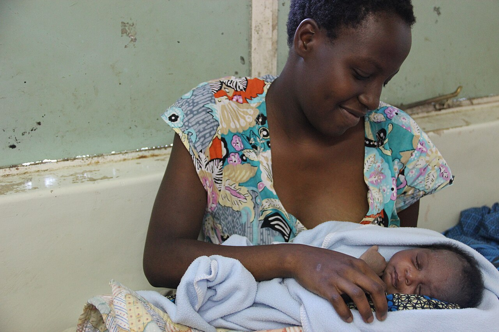
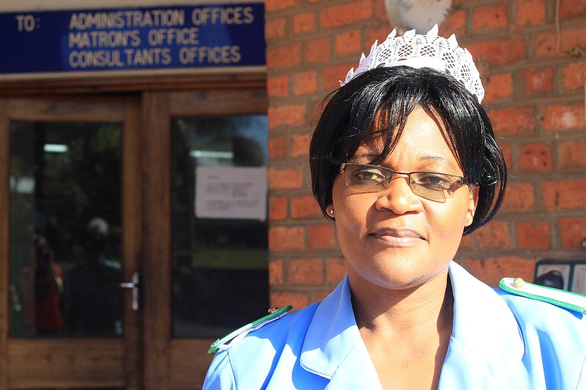

Uncompromising Protection of Early Life
The physical safety, thermal warmth, nutrition, and safeguarding of vulnerable newborns and mothers come first in every programme we design and deliver.
Wings is a maternal and newborn support organization dedicated to closing the critical care gap between hospital birth and family life in Malawi—ensuring no newborn or mother faces early-life crisis without protection, clinical guidance, and compassionate care.
When a woman experiences a complicated pregnancy or high-risk delivery in Malawi, the days and weeks immediately following birth are often the most precarious. Premature birth, low birth weight, severe maternal blood loss, postpartum infections, or the tragic loss of a mother during childbirth can leave a newborn in immediate danger—not from a lack of family love, but from severe resource constraints and limited postnatal safety nets.
Wings exists with the conviction that every mother's life and every newborn's future are precious. We work alongside local nurses, maternity wards, and extended families to ensure high-risk infants and recovering mothers receive continuous protection and practical support after leaving health facilities.

Mothers navigating crisis need more than clinical referrals—they need a trusted circle of care that understands the physical, emotional, and social realities of motherhood in Malawi. Our approach is shaped and led by women who understand how cultural context, family networks, and dignified communication transform health outcomes.
By pairing experienced maternal nurses and community health advocates with mothers in their own communities, we build lasting trust. Mothers feel safe asking questions, attending postnatal clinics, and seeking early help before minor complications become life-threatening emergencies.

Every decision we make—from assembling an Essential Newborn Package to coordinating an urgent clinic referral—is governed by four foundational commitments.
The physical safety, thermal warmth, nutrition, and safeguarding of vulnerable newborns and mothers come first in every programme we design and deliver.
Every mother—regardless of age, income, or rural isolation—is met with warmth, confidentiality, and clinical respect throughout pregnancy, birth, and recovery.
We never treat a newborn in isolation. We equip mothers, grandmothers, and families with practical supplies and knowledge so children thrive within loving homes.
Our UK-connected network mobilizes resources, advocacy, and healthcare partnerships to directly reinforce frontline maternal and neonatal care in Malawi.
Connect with our team to support vulnerable newborns and mothers in crisis, partner on maternal health initiatives in Malawi, or enquire about our First 100 Days programmes.